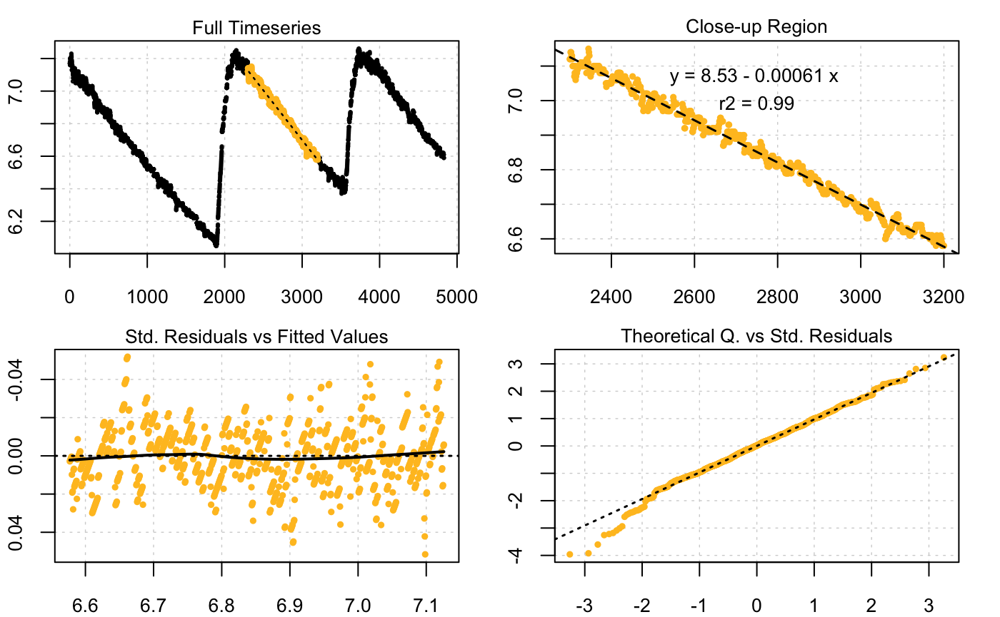
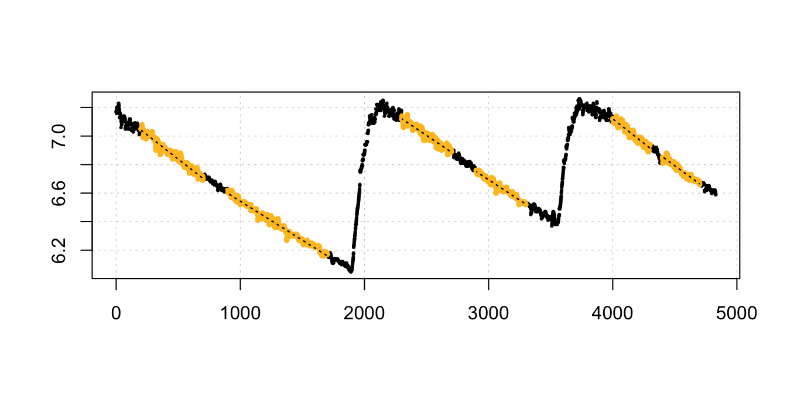
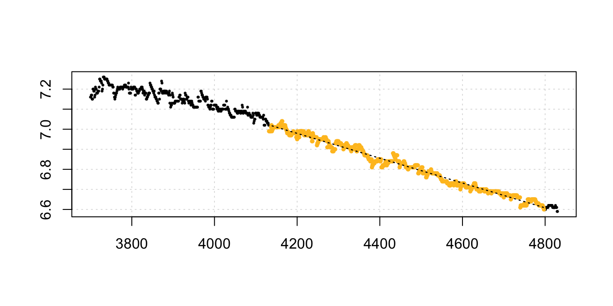
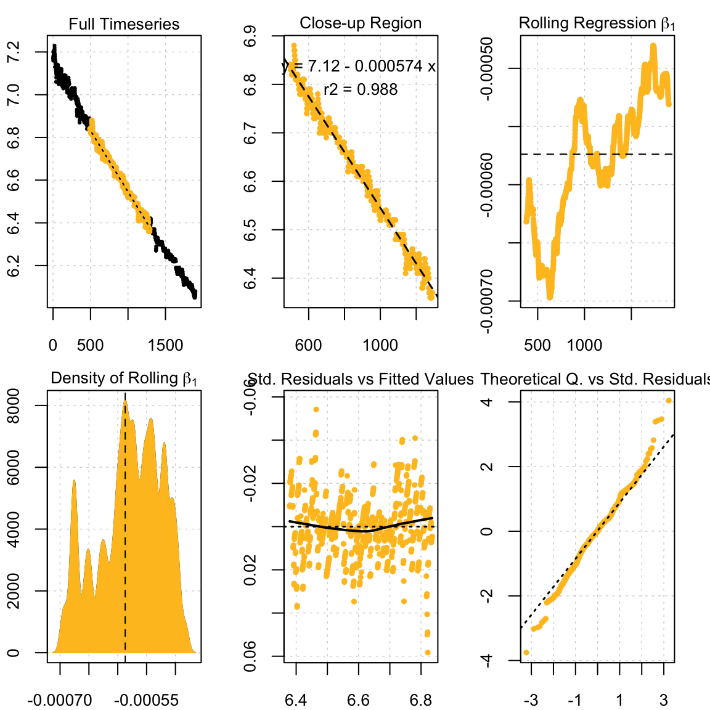
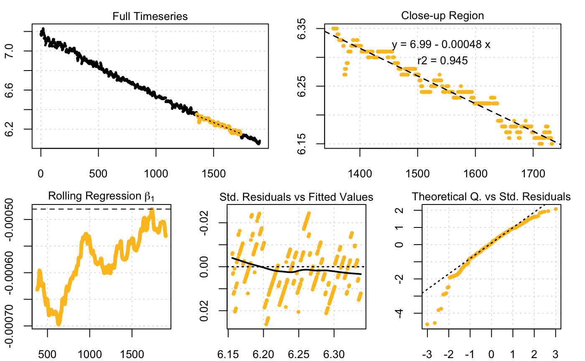

Intermittent-flow respirometry 1: Simple example
Source:vignettes/intermittent.Rmd
intermittent.RmdIntermittent-flow respirometry
Intermittent-flow respirometry involves obtaining multiple replicates in an experiment by periodically flushing the respirometer with fresh treatment water or air after a set period of time or \(O_2\) decrease. Typically, the oxygen sensing system is left recording during flushes so the system returning to normoxia can be seen in the data. If the dataset is not split into the separate replicates, this results in an dataset with oscillating levels of oxygen. This vignette shows a simple example of how an intermittent-flow respirometry experiment can be analysed in respR. The next vignette LINK shows how a longer, more complex intermittent-flow experiment with differing background rates can be analysed.
A relatively simple example
The example data, intermittent.rd, contains intermittent-flow measurements of oxygen consumption in the sea urchin Heliocidaris erythrogramma. Detailed information about the data, including its source and methods, can be obtained with the command ?intermittent.rd.
We use inspect() to scan for errors in the data frame, preview the data and save it to an object to pass to the next stage.
urchin_int <- inspect(intermittent.rd)#> No issues detected while inspecting data frame.
#>
#> # inspect # -----------------------------
#> Time O2
#> NA/NAN pass pass
#> sequential pass -
#> duplicated pass -
#> evenly-spaced pass -We can see from the top plot that this dataset has three replicates. The flush periods obviously skew the bottom plot which shows rate of change in O2 concentration, however uptake rates (flat regions) appear to be consistent within each experimental replicate.
Analysis with calc_rate
In the future respR will support intermittent-flow data directly with a dedicated function to easily identify and subset replicates, but at present intermittent data can be analysed quite easily via the main calc_rate function with a little data organisation.
Subsetting by row and time
The calc_rate function supports input of multiple subset regions by row or time. The from and to operators can be vectors with paired values:
urchin_int_rates <- calc_rate(urchin_int, from = c(200, 2300, 4100), to = c(1800,
3200, 4600), by = "time")
print(urchin_int_rates)
#>
#> # calc_rate # -------------------
#> Rate(s):
#> [1] -0.0005734109 -0.0006097325 -0.0006539752Calling summary() will show the coefficients and locations of each subset:
summary(urchin_int_rates)
#> Summary:
#> intercept_b0 rate_b1 rsq row endrow time endtime oxy endoxy
#> 1: 7.127202 -0.0005734109 0.995 201 1801 200 1800 7.05 6.11
#> 2: 8.528274 -0.0006097325 0.990 2301 3201 2300 3200 7.12 6.58
#> 3: 9.731918 -0.0006539752 0.967 4101 4601 4100 4600 7.08 6.73
#> rowlength timelength rate_twopoint
#> 1: 1600 1600 -0.0005875
#> 2: 900 900 -0.0006000
#> 3: 500 500 -0.0007000We can also use plot() to view the diagnostic plots of any individual replicate. The argument rep determines which data subset to plot:
plot(urchin_int_rates, rep = 2)
#>
#> # plot # ------------------------
#> Plotting...this may take a while for large datasets.
#> Done.We can even query multiple regions of each replicate (which can overlap, although this would obscure the output plot somewhat):
calc_rate(urchin_int, from = c(200, 900, 2300, 2900, 4000, 4400), to = c(700,
1700, 2700, 3300, 4300, 4700), by = "time")
#>
#> # calc_rate # -------------------
#> Rate(s):
#> [1] -0.0006790314 -0.0005463056 -0.0005853780 -0.0005705494 -0.0006845746
#> [6] -0.0006334074Extracting rate results
Rates can be easily extracted for further analysis or selection. For instance, we may be interested in the lowest rate, the one most representative of basal metabolic rates. Of course because rates are negative, the minimum value in negative terms would actually represent the highest rate, so we should extract the maximum (least negative) value, or transform the rates first:
urchin_int_rates$rate
#> [1] -0.0005734109 -0.0006097325 -0.0006539752
min(-1 * urchin_int_rates$rate)
#> [1] 0.0005734109Or we may be more interested in the mean rate:
mean(urchin_int_rates$rate)
#> [1] -0.0006123729Subsetting by oxygen
If we are interested in looking at rates over particular oxygen ranges within each replicate, calc_rate will find the first match to the range entered:
calc_rate(urchin_int, from = 7, to = 6.6, by = "o2")
#>
#> # calc_rate # -------------------
#> Rate(s):
#> [1] -0.0006191943To examine the same range in each replicate, we can follow a number of approaches. We can call the data range containing another replicate directly from the original dataset, or data frame saved within the inspect() object:
calc_rate(intermittent.rd[2100:3500, ], from = 7, to = 6.6, by = "o2")
#>
#> # calc_rate # -------------------
#> Rate(s):
#> [1] -0.000615731
calc_rate(urchin_int$dataframe[2100:3500, ], from = 7, to = 6.6, by = "o2")
#>
#> # calc_rate # -------------------
#> Rate(s):
#> [1] -0.000615731
Or we can subset them manually into new dataframes, and process them separately through the entire workflow. Here we use the dedicated subset_data function in respR, which allows easy subsetting by time, oxygen or row number. For best results, these should exclude the flush periods.
# Create separate replicate data frames
u_rep1 <- subset_data(intermittent.rd, from = 1, to = 1900, by = "time")
u_rep2 <- subset_data(intermittent.rd, from = 2100, to = 3500, by = "time")
u_rep3 <- subset_data(intermittent.rd, from = 3700, to = 4831, by = "time")
# Process one in `inspect()` (output not shown)
u_rep3_c <- inspect(u_rep3)calc_rate(u_rep3_c, from = 7, to = 6.6, by = "o2")
#>
#> # calc_rate # -------------------
#> Rate(s):
#> [1] -0.0006188192
Analysis with auto_rate()
To more rigourously identify minimum, maximum or most linear rates we can use the auto_rate() function, however because this does not support (as yet) subsetting internally, each replicate must be subset and analysed separately. See other vignettes for more detail on using auto_rate().
## subset first replicate
u_rep1 <- subset_data(intermittent.rd, from = 0, to = 1900, by = "time")## analyse in auto_rate
auto_rate(u_rep1) #default = most linear rate
#>
#> 8 kernel density peaks detected and ranked.
auto_rate(u_rep1, method = "min") # minimum rate
Background adjustments
For background adjustments, the adjust_rate function can be used on calc_rate objects containing multiple rate values:
urchin_int_rates_adj <- adjust_rate(urchin_int_rates, by = -5e-05)
#>
#> Rate adjustments applied. Use print() command for more info.
urchin_int_rates_adj$input.rate
#> [1] -0.0005734109 -0.0006097325 -0.0006539752
urchin_int_rates_adj$corrected
#> [1] -0.0005234109 -0.0005597325 -0.0006039752We can see each individual rate has been adjusted, and the new rates can be extracted from the resulting object using $corrected.
Converting rates
Once the rates have been determined, they can be converted to volume-corrected or mass-specific rates using convert_rate.
u_rates_final <- convert_rate(urchin_int_rates_adj,
o2.unit = "mg/L",
time.unit = "s",
output.unit = "mg/h/g",
volume = 2.379,
mass = 0.006955)Only the first rate converted rate is shown in the output, but all rates determined are converted and can be extracted.
u_rates_final$input
#> [1] -0.0005234109 -0.0005597325 -0.0006039752
u_rates_final$output
#> [1] -0.6445291 -0.6892556 -0.7437362